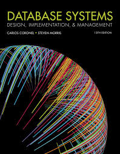
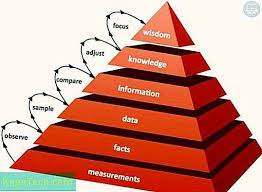
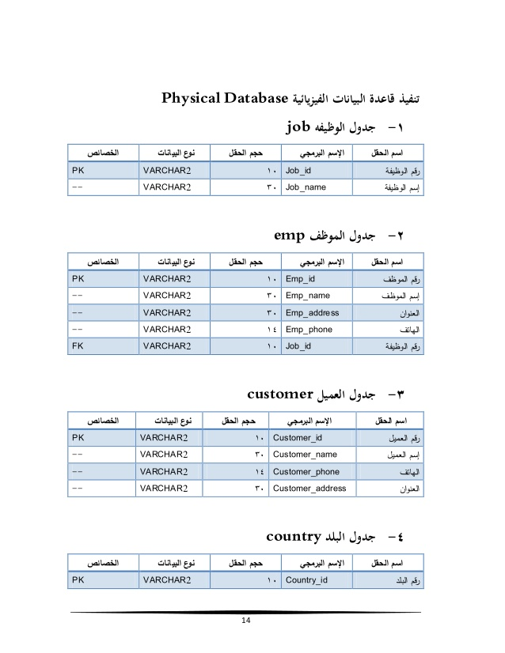
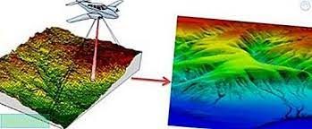

(DataBase SYSTEM)
قاعدة البيانات أو قاعدة المعطيات (DataBase)، هي مجموعة من عناصرِ البيانات المنطقية المرتبطة مع بعضها البعض بعلاقة رياضية، وتتكون قاعدة البيانات من جدول واحد أو أكثر. ويتكون الجدول من سجل (صف (قواعد البيانات)) أو أكثر ويتكون السجل من حقل (حقل (علم الحاسوب)) أو أكثر. ومثال عليه السجل الخاص بموظف معين يتكون من عدة حقول مثل رقم الموظف - اسم الموظف - درجة الموظف - تاريخ التعيين - الراتب - والقسم التابع له، وغير ذلك من بيانات الموظفين تخزن في جهاز الحاسوب عَلى نحو منظّم، حيث يقوم برنامج (حاسوب) يسمى محرك قاعدة البيانات (database engine) بتسهيل التعامل معها والبحث ضمن هذه البيانات، وتمكين المستخدم من الإضافة والتعديل عليها. يتم استرجاع البيانات باستخدام أوامر من لغة الاستعلام حيث تعتبر معلومات تساعد في عملية اتخاذ القرار.

*نظام إدارة قواعد البيانات هو البرنامج الذي يتم من خلاله استرجاع البيانات، أو الإضافة أو التعديل عليها، أو حذفها، حيث يقوم البرنامج بالربط بين المستخدم وبين محرك قاعدة البيانات، لأداء تلك المهمة. وفى حال وجود علاقة بين جداول قاعدة البيانات يسمى هذا بنظام قواعد البيانات العلائقية (نظام إدارة قواعد البيانات العلائقية) الهدف الأساسي لقواعد البيانات هو التركيز على طريقة تنظيم البيانات وليس على التطبيقات الخاصة. أي أن الهدف الرئيسي لمصمم قاعدة البيانات هو تصميم البيانات بحيث تكون خالية من التكرار ويمكن استرجاعها وتعديلها والإضافة عليها دون المشاكل التي يمكن أن تحدث مع وجود التكرار فيها. يتم ذلك عن طريق ايجاد ثلاثة مستويات من التجريد أو النماذج لقواعد البيانات تسمى نماذج التطبيع (تسوية قاعدة البيانات)، ويقصد بها جعل تركيبة البيانات أقرب للطبيعة التصنيفية. وهناك تركيبات لقواعد البيانات حسب نوع العلاقة الرياضية بين البيانات، ومنها: التركيب العلائقي : وهو اعتماد علاقة محددة بين عناصر البيانات، مثل أن تكون قيمة عنصر معتمدة على حاصل جمع عنصرين. وهذا التركيب هو أنجح التراكيب المطبقة في عالم قواعد البيانات المعلوماتية، وذلك بسبب إعطائه تنوع في نوع العلاقة بين البيانات، لأن احتمالية تنفيذ العلاقات فيه أكبر من اي تركيب اخر.
التركيب الهيكلي : وهو اعتماد علاقة الهيكل التنظيمي بين عناصر البيانات، مثل أن يكون عنصرين مصنفين تحت عنصر واحد أو تابعين له.
التركيب الهرمي : وهو اعتماد علاقة الهرم بين عناصر البيانات، مثل أن يكون كل عنصر مسؤول عن عنصر واحد فقط وليس أكثر.

*مكونات نظام إدارة قواعد البيانات*
*يتكون نظام إدارة قواعد البيانات من: لغة نمذجة (بالإنجليزية: Modeling language) لتعريف رسم قاعدة البيانات بنية البيانات أو هياكل بيانات (بالإنجليزية: Data structures) (جدول، سجل، حقل وبطاقية) مصممة بطريقة فعالة من أجل التعامل مع كمية ضخمة من البيانات لغة استعلام (بالإنجليزية: Query language) لتمكين المستخدمين، حسب صلاحياتهم، من مسائلة قاعدة المعطيات بطريقة مباشرة وتحليل البيانات وتعديلها وتغذيتها بالجديد. آلية تعامل (بالإنجليزية: Transaction mechanism) تضمن خصائص ACID وظائف نظام إدارة قواعد البيانات:
إنشاء قواعد البيانات : عند انشاء قاعدة بيانات، يتم تخزين البيانات في جداول، ويمكن انشاء جدول بواسطة انشاء قاعدة بيانات جديدة أو بواسطة ادراج جدول في قاعدة البيانات أو بواسطة الاستيراد أو الارتباط بالجدول من مصدر بيانات آخر، مثل برنامج مايكروسوفت إكسل Microsoft Office Exel 2007 أو مستند مايكروسوفت وورد Microsoft Word 2007 أو ملف نصي أو قاعدة بيانات أخرى. وبعد أن يتم إنشاء قاعدة بيانات يمكن بعد ذلك ادخال البيانات لبدء تعريف الجدول. تحديث قواعد البيانات. تشغيل قواعد البيانات. صيانة قواعد البيانات. حماية وتأمين سلامة البيانات. التحكم في تزامن العمليات. فوائد نظام إدارة قواعد البيانات لنظم إدارة قواعد البيانات فوائد و محاسن عدة ، ابرزها:

عدم التكرار في البيانات. عزل البيانات عن البرامج (عدم الاعتمادية). تناسق البيانات و ترابطها. تمثيل البيانات المخزنة للواقع الحالي. توفير بيئة معالجة متعددة للمستخدمين. الحفاظ على أمن و سلامة البيانات وكمالها. مفهوم قواعد البيانات عبارة عن عملية متسلسلة تسمح ببناء قاعدة بيانات صلبة ومتماسكة وغير متكررة العناصر. تتألف هذه العملية من ثلاث مراحل أساسية ممثلة بثلاثة نماذج : 1-النموذج التصوّري

2-النموذج الترابطي

3-النموذج التقني
*النموذج التصوّري :- يعتبر النموذج التصوّري الخطوة المؤسسة في مسار عملية تحليل قواعد البيانات. وهذه المرحلة تقضي بتجريد المسألة الواقعية المطروحة للقيام بنوع من اعادة تكوين لهذه المسألة في سبيل الوصول إلى حل في الإطار التطبيقي على الآلة. تبدأ عملية بناء هذا النموذج بتحليل المسألة المطروحة وحاجاتها التي يجب أن تنجز بعناية. ومن ثم تتم ترجمة هذا التحليل إلى نموذج مرئي (graphic shema) والذي يمثل بدوره النموذج المفاهيمي. يوجد طريقتين للقيام بهذا النموذج : 1- طريقة الكيانات والعلاقات (Entity relationship): وهذه الطريقة تستطيع ان تطبق بمفهومين: مفهوم شين (Chen): والذي انجزه الباحث شين(Chen) عام 1976 ويعتير شين المؤسس لطريقة الكيانات العلاقات مفهوم الMERISE والتي انجزت بواسطة (Tardieu و al.) عام 1985. 2- وطريقة (Class diagrams of UML). النموذج الترابطي النموذج الترابطي هو المرحلة الثانية في عملية تحليل قواعد البيانات. ويعتبر هذا النموذج من المراحل الآساسية في مفهوم قواعد البيانات فمن خلال هذا النموذج تتم عملية التطبيق على الآلة. تتم عملية بناء هذا النموذج بتحويل النموذج التصوّري إلى علاقات، عبر اتباع قواعد محددة. العلاقة هي عبارة عن مجموعة فرعية من مجموعة الضرب الديكارتي (Cartesian Poduct) بين عدد من المجالات(Domain): يمكن تشبيه العلاقة بجدول من عدة عواميد، وكل خط منه يعتبر تجسيد(instantiation) لهذه العلاقة. وقد تم مؤخرا اصدار نموذج جديد يدعى النموذج الترابطي الغرضي (Relationnel object) وهو مقتبس عن التحليل الغرضيّ التوجه، حيث تصبح العلاقات عبارة عن جداول أغراض. وبعد عملية بناء النموذج الترابطي، غالبا ما يتم ما يسمى بالتطبيع (Normal ization) حيث يتم دراسة النموذج الترابطي في هدف تحسينه. وهناك عدة أشكال من التطبيع وكل واحدة منها لديها قواعد محددة: الشكل التطبيعي الأول (1NF: First normal form) الشكل التطبيعي الثاني(2NF) الشكل التطبيعي الثالث(3NF) الشكل التطبيعي ل بويس-كود (Boyce_Codd NF) الشكل التطبيعي الرابع(4NF) الشكل التطبيعي الخامس(5NF) وغالبا يتم السعي إلى تطبيق الشكل التطبيعي الثالث. النموذج التقني النموذج التقني هو المرحلة الأخيرة من مفهوم قواعد البيانات، حيث يتم تطبيق النموذج الترابطي على الآلة، عبر برامج إدارة قواعد البيانات واستخدام لغة ال "الأس كي أل (SQL).
ويوجد العديد من هذه البرامج، منها : أوراكل(ORACLE) ،وهو برنامج إدارة قواعد بيانات ترابطيّة، وترابطيّة غرضية في آخر اصداراته. وهو نظام مخصص للتطبيقات العالية المستوى (Professional). ماي أس كيو أل (MySQL)، وهو برنامج إدارة قواعد بيانات ترابطيّة، ويستخدم خصوصا لبناء مواقع متحركة على شبكة الإنترنت بمساعدة لغة الPHP بوسغر أس كيو أل (PosgreSQL) وهو برنامج إدارة قواعد بيانات ترابطيّة وترابطيّة غرضية، وهو برنامج منتج وقوي ويشكل بديلا مفتوح المصدر (Open Source) للبرامج التجارية مثل أوراكل أكسس (Access) وهو برنامج إدارة قواعد بيانات ترابطيّة من شركة مايكروسوفت العالمية، وهو مخصص للتطبيقات الصغيرة والكبيرة .